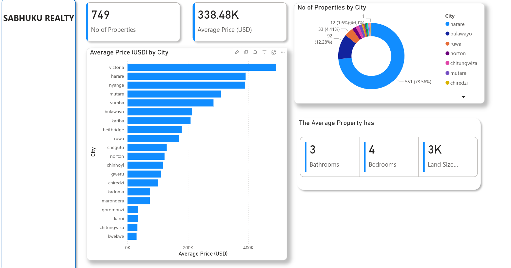

Systems
HPC infrastructure, cluster visualization, deployment workflows, Linux, automation, and GPU-enabled platforms.
Former Lenovo HPC Engineer / Master's Graduate / Published Inventor
Software Engineer Data Scientist Inventor
Building AI products, enterprise software, and research systems across high performance computing, analytics, product engineering, and open-source infrastructure.
Profile
Tinashe Kucherera is a software engineer, data scientist, inventor, and researcher with experience spanning enterprise software, high performance computing, AI products, web platforms, and research operations.
At Lenovo, he worked within a 16-person High Performance Computing team as one of two software developers, contributing to infrastructure software, cluster management workflows, documentation systems, and frontend and backend applications touching NVIDIA H100, H200, L40S, BlueField, OpenHPC, xCAT, and Confluent ecosystems.
"I believe in shipping quickly, building MVPs, learning from users, and continuously iterating toward better products."
HPC infrastructure, cluster visualization, deployment workflows, Linux, automation, and GPU-enabled platforms.
Analytics dashboards, ML experimentation, reporting systems, data visualization, and AI product development.
Full-stack applications, startup MVPs, technical documentation, brand systems, and customer-facing digital experiences.
Experience
One of two software developers within a 16-person High Performance Computing team building software for cluster deployment, management, documentation, and infrastructure visualization.
Built analytics, reporting, and workflow systems for the Center for Undergraduate Research while supporting research operations and mentoring undergraduate researchers.
Education
North Carolina A&T State University
Focus: Computational Data Science and Engineering.
Research interests include AI systems, computer vision, infrastructure analytics, data-intensive engineering, and applied research systems.
Patents & Innovation
Computer vision techniques for improving correspondence matching within photogrammetry systems.
View PatentTechnology designed to improve keyboard illumination and usability under varying lighting conditions.
View PatentSystem and method for detecting cable disconnection events in computing infrastructure environments.
View PatentSelected Work

AI-powered platform under active development, spanning full-stack architecture, AI integrations, product design, and cloud deployment.
Cluster management application work focused on RackView, infrastructure visualization, and enterprise HPC systems management.
Internal analytics and reporting platform supporting data visualization, workflow automation, and student research operations.
Websites & Digital Experiences
Freelance project covering branding, logo design, visual identity, development, and deployment.
Political campaign website designed, developed, maintained, and tuned for a public-facing campaign workflow.
Website design, development, and deployment for a mission-driven organization.
Visit SiteDocumentation & Open Source
Technical documentation platform created while working inside Lenovo's HPC ecosystem.
Open-source documentation contributions supporting cluster management solutions.
Community contributions, HPC ecosystem participation, and open-source collaboration.
Documentation, software contributions, and cluster management tooling.
Technical Writing
A perspective on AI becoming a fundamental service layer for modern products and organizations.
Read ArticleA practical look at privacy expectations and data protection obligations in Zimbabwe's digital economy.
Read ArticleAn exploration of AI inference providers and the infrastructure layer behind production AI applications.
Read ArticleTechnology Map
HTML, CSS, JavaScript, TypeScript, Svelte, React
Python, Django, Flask, FastAPI
Python, R, SQL, TensorFlow, Scikit-learn
Docker, Kubernetes, Linux, HPC, NVIDIA GPU Systems
AWS, Google Cloud Platform, Heroku
Awards & Scholarships
Awarded for Master's studies, recognizing academic achievement and future technical potential.
Awarded for academic excellence and leadership during undergraduate studies.